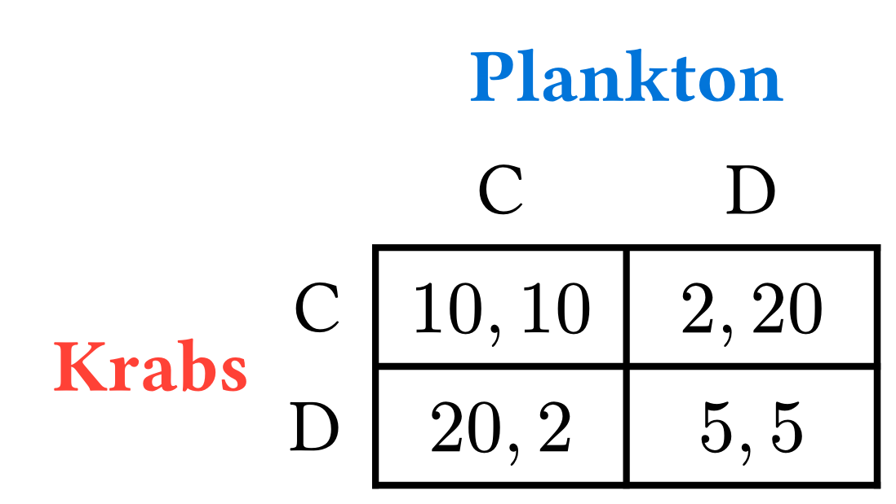

At the end of the game, player 2 will end instead of continue to get an extra dollar
Player 1 knows this, so they will end a round early for the extra dollar
This line of thinking continues all the way back to the beginning of the game, where Backward Induction predicts that the game will end at the first stage

Suppose we play PD 30 times
The thought: on day 1, we know we have 29 more days of PD in front of us;
Does this actually happen?
Consider the following information-contingent plan of action:
\[ s=\begin{cases} \text{Play } C &\text{ if D has never been played before}\\ \text{Play } D &\text{ if someone has played D before} \end{cases} \]
Looking for SPNE \(\implies\) use backward induction
What happens on the last day of play?
…
On the second to last day of play, both players know that they will rationally defect tomorrow
What happens on day 28? Day 20? Day 2?
Using backward induction, it turns out that this incentive mechanism isn’t enough to pull us away from \((D,D)\), even on the first day
As it turns out, finitely repeated games – especially those with non-changing stage games – are not that interesting
What is this phenomenon called?
Unravelling!
This is also an application of the One-Shot Deviation Principle
How should we think about playing games forever?
There are two stories we can tell which motivate infinite repeated play
They are roughly equivalent, less some differences in interpretation
One is easier to grasp and imagine
The other provides a more economically-portable interpretation
Game ends with fixed probability
Agents discount the future
Let \(\delta\in(0,1)\)1
Suppose that you are playing prisoner’s dilemma repeatedly
This allows us to “simulate” infinite play
In particular, there is no “last stage” where our opponent will cheat us
Think about \(\delta\) being very small (e.g. close to 0):
When you play prisoner’s dilemma, there is a very small chance that you will see this person again
What should you do?
Now, think about \(\delta\) being very large (close to 1):
Each time you play, there is a pretty good chance you will play them again tomorrow
So, you have more incentive to cooperate today, in hopes that this will lead to cooperation tomorrow
The other motivation for infinitely repeated assumes that agents are infinitely living
However, the agents, much like you and I, like consumption today more than consumption tomorrow
What is \(\delta\)?
Suppose the interest rate is 25%: you would be indifferent between $1 now and $1.25 in the next period
If \(r\) is the interest rate, then \(\delta\) is given by \[ \delta = \frac{1}{1+r}\]
In this example, \(\delta=1/1.25=\frac{1}{5/4}=4/5=0.8\)
I’m not too interested in [you] transforming the interest rate to the discount factor, so I might use “rate” interchangeably with “factor”
Now, we think of agents actually playing PD forever: they wake up each day1 and play; it’s just a part of their every-day life
However, these players prefer utility today over utility tomorrow
Let’s think about a very low \(\delta\) (close to 0)
Now let’s think about a very high \(\delta\) (close to 1)
What’s a strategy?
Let’s model information at a given stage of the game by \(\mathcal{H}\), which contains a history of all moves played thus far1
Consider the following strategy: \[ s_{GT} = \begin{cases} C & \text{if } D\notin \mathcal{H}\\ D & \text{otherwise} \end{cases} \]
This says:
This stragey is aptly named Grim Trigger: if someone defects once, then we defect forever
In general, with repeated games, we are interested in checking whether we can achieve a more pareto-efficient outcome, maintaining the assumption of sequential rationality
If we can: when?
For our discourse, we are interested in finding what values of \(\delta\), if any, allow us to enforce the cooperative outcome in PD, using some particular strategy
This is a very good reference
Recall: if \(x\neq 0\), then \(x^{0}=1\)
Consider a cake
Consider a sequence of terms \(x_{1}, x_{2}, \dots\)
Then the series from \(1\) to \(k\) is a sum of the terms of this sequence, denoted by the following
\[ \sum_{k=1}^{n}x_{k}=x_{0} + x_{1} + x_{2} + \cdots + x_{n}\]
Consider \(\{x_{k}\}=\left(\frac{1}{2}\right)^{k}\). We will often want to start at 0:
\[ \begin{aligned} \sum_{k=0}^{n}x_{k}&=\left(\frac{1}{2}\right)^{0} + \left(\frac{1}{2}\right)^{1} + \left(\frac{1}{2}\right)^{2} + \cdots + \left(\frac{1}{2}\right)^{n}\\ &= 1 + \frac{1}{2} + \frac{1}{4}+\frac{1}{8} + \cdots + \frac{1}{2^n} \end{aligned} \]
Instead of ending at the \(n^{\text{th}}\) term, we can even compute infinite sums
We will primarily be focused on some flavor of the [geometric] series: \[\sum^{\infty} x^{n}\]
Here are some important sums to know; assume \(|x| < 1\)
\[\sum_{k=0}^{\infty} x^{n} = \frac{1}{1-x}\]
\[\sum_{k=1}^{\infty} x^{n} = \frac{x}{1-x}\]
No problem; use math to determine the other
Suppose you know \(\sum_{k=0}^{\infty} x^{n} = \frac{1}{1-x}\). Then
\[ \begin{aligned} \sum_{k=1}^{\infty} x^n &= \left(\sum_{k=0}^{\infty} x^{n}\right) - x^0\\ &= \left(\frac{1}{1-x}\right) - 1\\ &=\frac{1}{1-x} - \frac{1-x}{1-x}\\ &=\frac{x}{1-x} \end{aligned} \]
Intuition: If \(x<1\), then \(\frac{x}{1-x}\) will be smaller than \(\frac{1}{1-x}\)